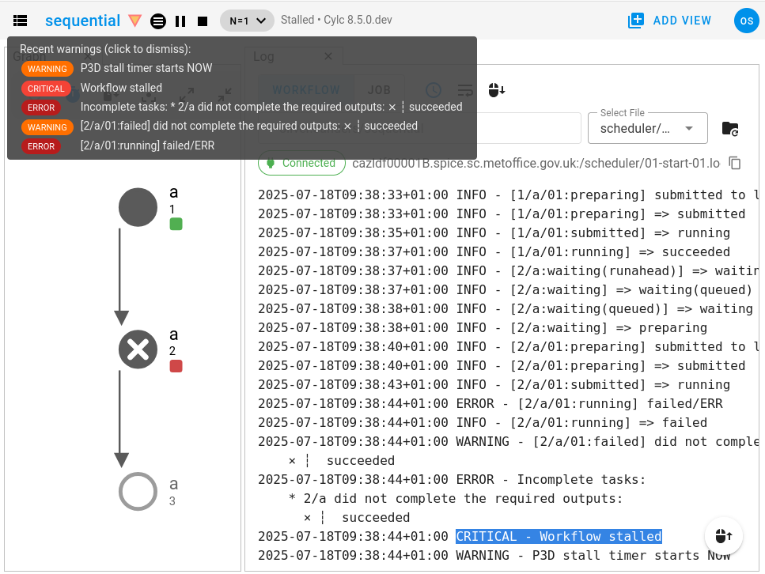

Workflow Completion
Once Cylc has run all of the tasks in the graph (i.e. once it has reached the end of the workflow and there are no tasks left), the workflow will shut down automatically.
A workflow with no tasks left is said to have “completed”.
When you restart a workflow, it will restart in the same state it shut down in.
So if you restart a completed workflow (one with no remaining tasks), it will
come back with no tasks. Having no more tasks to run, the workflow will
automatically shut down after the configured
restart timeout.
If you want to re-run some tasks in a completed workflow, restart the workflow then re-trigger the selected tasks or trigger a new flow to run through the graph (before the restart timeout passes).
A common pattern is to restart a completed workflow and extend it for a few
cycles. The easiest way to achieve this is to use the
stop after cycle point
rather than the
final cycle point, this prevents
the workflow from completing, making it easier to restart it from where it
left off. For a worked example, see Extending Workflow.
Scheduler Stall
If Cylc is unable to make progress through the graph (i.e, if the path through the graph is “blocked”), then the workflow is considered stalled.
Stalls are usually caused by unexpected task failures.
A stalled workflow has not run to completion but cannot continue without manual intervention. Typically this involves fixing and rerunning a failed task.
Stall Conditions
A workflow has stalled if:
The workflow has not run to completion (i.e, there are still tasks left for Cylc to run).
AND no tasks are waiting on unsatisfied external events (e.g, clock triggers and xtriggers).
AND All activity has ceased (i.e, no preparing, submitted or running tasks).
Stalls are caused by final status incomplete tasks and partially satisfied tasks.
These most often result from task failures that the workflow does not handle automatically by retries or graph branching.
Diagnosing Stalls
A screenshot of the Cylc GUI displaying a stalled workflow:
{kind=link}
In the above screenshot:
The stall was caused by the failure of the task
2/a.The stall event is recorded in the workflow log file (shown on the right) along with the list of incomplete tasks that caused it (2/a did not complete the required outputs: succeeded).
In the GUI, the warning triangle will light up to notify you of the error, hover over it to see the log messages.
Stall Timeouts
A stalled scheduler stays alive for a configurable timeout period to allow you to intervene, e.g. by manually triggering an incomplete task after fixing the bug that caused it to fail.
If a stalled workflow does eventually shut down, on the stall timeout or by stop command, it will immediately stall again on restart to await manual intervention.
Stall timeout behaviour is controlled by the following configurations:
Configuration
[scheduler][events]stall timeoutThe length of time before a stalled workflow will shut down.
[scheduler][events]abort on stall timeoutWhether the scheduler should shut down immediately with error status if the stall timeout is reached.
Stall Events
Cylc emits the stall event when a scheduler stalls.
Configuration
[scheduler][events]mail events=stallConfigure emails for stall events.
[scheduler][events]stall handlersConfigure custom event handlers to run on stall events.